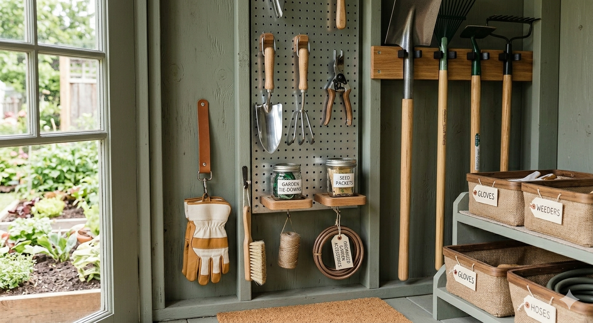
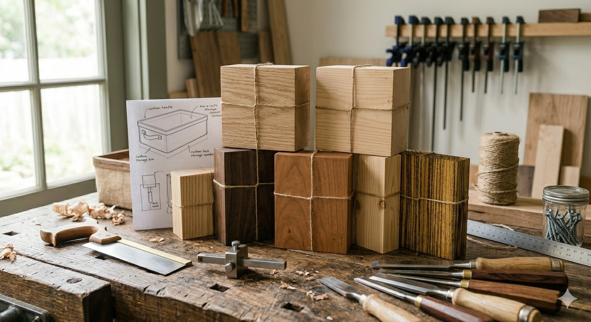

Popular's of the month
Here are the most popular questions and tutorials chosen by you. Click on each of them to go through the threads. Remember to vote for the ones you find the most useful and interesting! If your question or tutorial is listed here, you will win some recognition stars :)
Questions
How can I tell if a plant is getting too much sunlight?
I recently moved some plants to a sunnier location because I thought they needed more light. However, a few of them don't seem to be doing well, and I'm not sure whether the problem is too much sun, not enough water, or something else.
Why does my car make a squealing noise when I start it?
My car occasionally makes a high-pitched squealing sound when I start the engine, especially in the morning. The noise usually goes away after a few minutes, but I'd like to understand what might be causing it.
How do I know if a piece of furniture can be safely mounted to a wall?
I have a tall bookshelf that I'd like to secure for safety reasons. Before drilling any holes, I want to know how to determine whether the furniture and wall are suitable for mounting and what factors I should consider.
Tutorials
How to Clean and Maintain a Coffee Maker
This tutorial covers the proper way to remove mineral buildup, clean internal components, and keep your coffee maker operating efficiently while improving the taste of your coffee.

How to Organize and Store Garden Tools Efficiently
Learn how to create an organized storage system for your gardening tools, helping you protect equipment from damage, save space, and make future gardening tasks more convenient.

How to Choose the Right Wood for a DIY Project
Discover the differences between common types of wood, their strengths and weaknesses, and how to select the best material based on your project's requirements and budget.
